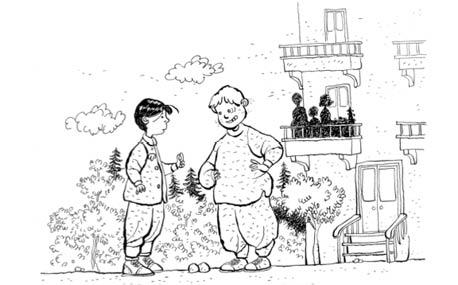

GİYDİM TULUMLARI
Normalde sınıfın en çalışkan ve maddi durumu da yerinde olmayan kızına âşık olurum. Ahmet çakalı da nerede güzel kız var, onu bulur. Bir de bu, daha dört yaşındayken kızların peşinden koşmayı ve öpüşmeyi öğrendi. Ben ise üniversite bitince, kız nasıl güzel oluyor, nasıl flört ediliyor falan anladım. O ana kadar Yalan Dünya’daki Ahmet’ten farkım yok. Bir de nasıl utangacım kızlara karşı, anlatamam. Bu da devamlı, şunu öptüm bunu öptüm diye anlatıyor. (Ha, sonradan o duruldu, ben açıldım o ayrı... Onun kitabını da yazacağız, dur bakalım Ahmet Emmi. Bu arada bizim “Ahmet’im” kız konusu açılınca “Ahmet Emmi” oldu, o da ayrı.)
Sınıfta çalışkan ve memur çocuğu olan bir tane kız yok, hepsi benden tembel. Bir gün okulda bir kız gördüm ve dondum kaldım... Yeşim! Allah boş vaktinde yaratmış! Sapsarı düz uzun saçlar, yeşil gözler. İlik! Özür diliyorum, o dönem “ilik” demeyi bilmiyorum da “hebe hebe” gibi bir ses çıkarıyorum. Hani güzellikten anlamayan ben bile âşık oldum, o denli. Tabii benim, konuşayım, bakayım gibi bir durumum yok, sadece süper etkili utanabiliyorum o kadar. Sen kalk, kız bizim mahallede Atillaların bakkalın orada otur... Mahalleden de yani... Süper! Bir de ablası var, o da güzel. Bu durumda büyük ihtimalle Allah kızı övüp yaratmamış, benim müstakbel kayınvalideyi övüp yaratmış ki tüm imalat mükemmel. Hani Steven Tyler gibi bir babadan Liv Tyler gibi bir kız çıkmış ya, annenin güzelliğini düşünün, o genleri düzelteceğim diye mahvolmuştur -rahat ol, adam okumaz bu kitabı. (Google’a “Steven Tyler, Liv Tyler” yaz bak, anlarsın ne demek istediğimi.)
Neyse ben bunu pek beğeniyorum, hatta deli gibi âşığım. Teneffüslerde inip uzaktan bakıyorum. Bir de çok efendi davranıyorum; teneffüslerde azan o Şerif gitti, nasıl efendi bir adam geldi anlatamam. Bir gün aradığım fırsat karşıma çıktı; okul çıkışında eve doğru yürüyoruz Sanem’le beraber, Sanem’in haberi yok, “Abi, biz yolu niye değiştirdik?” diye sordu. Normalde okulun altındaki sürüyle dükkânın olduğu cıvıl cıvıl yoldan gider gelirken, bizimkisi üstteki sakin yoldan yürüyor diye biz de oradan gidip gelmeye başladık. “Burası daha güzel” dedim ben. Yeşim, ablasıyla gevrekçinin önünde durdu (“Bursalılar gevreğe simit diyorlar” yazacağım ama sonradan, simide bizim gevrek dediğimizi öğrendim). “Gel” dedim Sanem’e, “gevrek yiyelim.” Ben arabaya yanaştım, Sanem, “Abi, annem ne güzel yemek hazırlamıştır şimdi, hem sen gevrek yemezsin ki” diyerek, hani bir delikanlının hele ki âşık bir delikanlının tüm karizmasını çizecek laflar söylüyor. Kız dönüp baktı, “Evde yemek olmasına rağmen simit alan ve onun da adını bilmeyen bu salak da kim?” der gibi... Ben gülümsedim, hem de Selahattin Çakaler gülümsemesi! Neyse önüne döndü bu, gevrekçi adam, “Bir lira vereceksin, elli kuruş olmaz” dedi. O güzelim kız ceplerini ara ara, elli kuruşu yok. “Yarım simit alamaz mıyım?” dedi. “O zengin kızı” diyemiyorum gevrekçiye, Allah açlıkla terbiye etmesin, kız aç işte. “Olmaz” dedi adam. Yeşim de “Peki” dedi. Tam yürümeye başlayacak, “Ben veririm elli kuruşu, ver kıza simidi” dedim. Yani bu kadar delikanlıca ve düzgün bir telaffuzla söyleyemediğimi biliyorum, yamuk yumuk da olsa söyledim. Simit yerine gevrek dedim mesela, yani en azından benim hırıltılardan kız da simitçi de niyetimi anladılar. “Simit oğlum. Simit, simit” dedi acımasız simitçi sırıtarak! Ve ekledi, “Olur, ver bakalım parayı.”
Ben çıkarıp elli kuruşu verdim. Sanem alttan bana o şişe dibi güzelim gözlüklerinin içinden hayretle baktı; ona beş kuruşun hesabını tutan ben, tanımadığım kıza elli kuruş hibe yapıyorum. “Saminem, o elli kuruş değil; o, tavuk tavuk” diyeceğim anlamayacak. (Sen de anlamadın değil mi? Doğru söyle anlamadın, anlamadın işte... Bak, kaz olsa anlardı ama gelmedi kaz işte...)
Yeşim gevreği aldı, bana bakmadı bile, yürüye yürüye gitti. “Sen almayacan mı?” dedi adam. Bende elli kuruş kaldı, adamın da yarım ürünler konusundaki politikasını biliyorum, “Annem yemek yaptı bize” dedim. Adam da Sanem de hayretle bana bakıyorlar, “Ee, ne dileniyon tezgâhın başında, milletin simit parasını mı ödemeye geldin?” dedi. Muhatap olunacak bir adam değil; keskin bir zekâsı ayrıca da muhakeme yeteneği var, insana kendini öküz gibi hissettirmeyi biliyor doğrusu. Normalde dalarım ama yavuklum önden yürüyor ve kızın yakınlarında beni Fransız mürebbiyeler büyütmüş havası veriyorum hep. “Gel kardeşim” dedim, Sanem’le yürümeye başladık. “Abi, ne yaptın sen! Bak teşekkür bile etmedi kız. Hem sen o parayı zorlukla kazanıyorsun...” Bir tanem, zengin çocukları böyle olur falan diye anlatacağım ama o ortamları bilmediği için anlama ihtimali yok. “Sen o ortamları nereden biliyorsun?” diyeceksiniz...
Pazar sabahları kızın ailesi balkonda kahvaltı yapıyor, ben de o saatte oradan geçiyorum, bir saniye gidişte, bir saniye de dönüşte kafamı kaldırıp bakıyorum. Yalnız toplam iki saniye için bu salaklık... (Kusura bakmayın bu bölümde bazı yerlerde kendim için bu ifadeyi kullanacağım, cevap hakkım doğarsa ben kendimi cevaplarım, siz sadece acımayın, okuyup ibret alın yeter, bu benim kendimle aramda olan bir şey. Ee, bize ne, kitapta yazıyorsun diyorsun ya, Ahmet istedi, “Oğlum, yazalım ibret olsun, kimse senin benim gibi olmasın” dedi.) Ben bu arada lafın başını unuttum, müsaadenizle Hasan’ı anlatayım.
Hasan da kim? Ya böyle merak edersiniz tabii. Hasan’ı mahalleye yeni geldiğimde tanıdım. Uzaktan izliyorum, tehlikeli sayılabilecek bir tip. Kapıcının oğlu ama babası çok büyük ve zengin iki apartmanın birden kapıcısı, o yüzden de ağırlığı var. Şöyle söyleyeyim; bizim apartmanda ev sahibi memur olacağına, orada kapıcı olmayı tercih edersin. Bunu köyden gelen bazlama, pestil, pekmezle falan büyütmüşler; ailede herkesten iri. Bir de böyle, aslında hem çok akıllı, hem de hafiften bazen deliriyorum havası veriyor. Mahalleliyi de sindirmiş; hem iri hem deli ya, herkes sinmiş durumda.
Mahallede en popüler oyun cilli oynamak. Misket, meşe, zıpzıp, bilye gibi isimlerle anılan malzemeye Bursa’da cilli diyorlar. Süper bir oyuncak. İki türlü oynanıyor; Mors ve Baş. Mors’da bir üçgen çiziyorsun yere, çizgilerin üstüne de cillileri koyuyorsun, kendi cillinle onları vurarak çizgiden çıkarıyorsun. Çıkardığın her cilliyi de “ütmüş” oluyorsun. Bu da, cilli senin oluyor demek. Herkesin bir torbası var ve o torbanın içinde de cillileri var. İflas edenler oluyor, üttürüyorlar tüm cillilerini, onlara destek oluyoruz, birleşip üçer beşer cilli veriyoruz. O da durumu kurtarıp bizleri ütüyor, oyun hayatını sürdürüyor. Dışarıda kalan kimse yok yani. Baş oyununda da, oyuna katılanlar üçer beşer tek bir çizgiye diziyorlar cillileri. Çizginin başındaki cilli Baş oluyor, onu vurursan hepsini alıyorsun. Çizgiden herhangi bir cilliyi vurursan, onun Baş’tan uzak olan bölümdeki cillileri alıyorsun.
Önceleri oyunlara girmeyip izliyordum öğrenmek için. Daha önce İzmir’de Ahmet’le lojmandaydık, nereden baksan korunaklı bir alan, çocukların hepsinin babası da arkadaş, aileler de tanışıyorlar. Burası açık bir mahalle, herkesi anlamaya, kuralları çözmeye ve raconu da anlamaya çalışıyorum. Bir de Çiğli’de hep Ahmet yanımdaydı; yol gösteriyordu (gösterdiği yol da “Salaksın oğlum sen, senin yüzünden dayak yiyip duruyoruz, yiyeceğim senin gururunu” falan, başka bir numarası da yok ama arkadaş işte). Burada ise tek başımayım.
Çocuklar oyun oynuyorlar, kaybeden efendi efendi cillilerini veriyor. Bir de, kaybeden “Yeter” demedikçe kazanan devam ediyor ki haksızlık olmasın. “Ben bırakıyorum” demiyor kazanan ki kaybedene kurtarma şansı versin ütüldüğü misketlerini. Yalnız bu Hasan normal normal oynarken son derece akıllı bir şekilde, kaybettiği an birden “Vörmmeem cillileri sizin taa sülalenizii, şununuzu, bununuzu” falan deyip yumruğunu yukarıdan kaldırıp üstlerine yürüyor, alıyor cillileri gidiyor. Kimse de dayak yemek istemediği için sesini çıkarmıyor. Kendi kazandığında da, “Ben artık oynamayacağım” deyip bırakıyor, ses eden olursa elini kaldırıp gözlerini bir belertiyor (Google’a bak, yalnız Ege Google’ı olacak, sağdıç). Ben mahalleye yeterince katılmamışım, lakabım henüz Pilli, et miyim tavuk mu belli değil, uzaktan izliyorum oyunları. Adam herkesi sindirmiş durumda.
Neyse, ben de oyunlara girmeye başladım. Bir gün Baş oynuyoruz, Hasan da gelmiş seyrediyor, baktı cilli sayısı arttı, “Ben de oynayacağım lan!” dedi. Herkes yine ne olacağının farkında, “Biz artık bırakıyoruz” falan dediler ama bu arada yeni oyun için cilliler dizilmiş, herkes beşer tane koymuş, ortada 30-40 tane falan cilli var. “Oynayacağım ....na goyuyum, bırakanı da ...rim” dedi Hasan. Henüz onun nasıl yapıldığını bilmiyoruz ama sevilmeyen insanlara yapılan bir şey olduğunu, kavgalarda biraz sonra dövülecek adama söylenmesinden anlıyoruz. Ayrıca dövmekten kötü bir şey olmalı ki adamlar dövmekle doymayıp bir sonraki safhada o eylemi de yapacağını belirtiyorlar. Bir tek Ahmet’im biliyor olmalı ama konuşmuyoruz o konuları pek. Geldi dizdi cillilerini. Geçti yanımıza, sıralama turları belli olacak. Oyun başladı ve bu kaybetti. Gözlerini büyütüp “Hepinizin ...nu, sülalenizi...” dedi.
Bu yazıyı kırk yedi yaşımda yazıyorum, hâlâ biri rest çektiğinde görmediğim olmadı. Abi, ne salak bir kişiliktir bu! Ne küfrettirdim kendime, etrafıma, ne de biri rest çektiğinde geri adım attım. Bunu, kahramanlıkmış gibi anlatmıyorum ama öyle işte. Geçen sefer de küfrediyordu ama ben oyunda yoktum, bu sefer bana da sövüyor. “Dokunma lan o cillilere” diye çıktım önüne. Bu, gözlerini devirdi, yumruğunu tepeye kaldırdı ki ben omzuna gelmiyorum -Hasan’ı yontsan iki Şerif çıkar, artanla da bir pencere pervazı yaparsın-, orta parmağını da yumruğun içinden sivri bir şekilde çıkartıyor ki en caydırıcı bölüm o. Yumruğu yiyen yok ama dosta güven, düşmana korku salıyor; bunun dostu yok, herkese korku salıyor. “Senin sülaleni ...rim” dedi ama ağzından da salya fışkırtabiliyor.
Herkes hayretle izliyor; mahalleye yeni gelen Pilli, deli Hasan’ı tanımıyor, dayağı yiyecek diye de inceden acıyanı da vardır, dayağı görmek için hevesle bekleyeni de. O sıralarda daha çete falan da yok ortada (sonradan adım adım oldu). “Laan! Asıl ben senin sülaleni şarap şişesine koyarım, çalkalar çalkalar üstte kalanları şu şekilde, altta kalanları şu şekilde ...rim” dedim. Ortalık dondu, ben de yumruğumu sıktım, “Lan! Bir vur bak ne oluyor şerefsiz...” Bu kısmın devamında da süper bir isim tamlamalı küfür var ama yazmıyorum. Hasan dondu, durdu durdu, “Alacam ben cillilerimi” dedi ama bir kibarlaşma geldi. Normalde herkesin cillisini alır gider, şimdi ise sadece kendi misketlerine talip oluyor. “Alamazsın, oyunun kuralı var, oynamasaydın! Alırsan sabaha kadar döverim lan seni” dedim ki beni limon gibi sıkar, bayılana kadar dayağımı yerim o da ayrı. Herkes hayretle bizi izliyor. Bir daha deli gibi bakıp yumruğunu kaldırdı, ben de deli gibi baktım yumruğumu gerdim. Baktı baktı, “Oynanmaz lan sizle bilmem ne ettiklerim” dedi. “Küfretme lan! Bilmem ne yapacağım!” cevabını aldı benden, döndü, yürüdü gitti.
Tam, “deli deliyi görünce çomağını saklar” vakası. Bu gitti, herkeste bir sevinç tufanı. Hasan birkaç gün görünmedi ortada ama benim forsum oldu, mahallede tepeye yerleştim. Abiler “Hasan’ı sindirmişsin ha! Aferin lan! Ufacık bir şeysin, sıksa elinde kalırdın” diyorlar ama sıkmadı işte. İki anlamda da sıkmadı yani.
Bu arada ben Yeşim’e nasıl sırılsıklam âşığım... “Ben de seni seviyorum” dese sonrası ile ilgili en ufak bir fikrim yok. Zaten bir şey söyleme cesaretim de yok, sadece okulda uzaktan hiç çaktırmadan, nehir kıyısında somonlara bakan yavru ayıcık gibi bakıyorum. (Belgesel seyrediyorum, oradan biliyorum. Bana laf yetiştirme... Nereden biliyormuşum somon seyreden ayıyı...)
Pazar günleri sabah erken kalkıyorum; o bakkala gönderemedikleri ben, bir süsleniyorum... Saçları oraya yatır, efendim o arka üst köşede, dikelen bölümü yatır falan cılkım çıkıyor. “Yok şort giymem ben”ler falan... Annem de, “Oğlum, sen gider pijamalı bile alırdın ekmeği, ne oldu?” diyor ama neyse, o lüks apartmana yaklaşırken kalbim küt küt atıyor, balkonun önünden geçerken sadece bir saniye rahatsız etmeyecek şekilde bakıyorum, kıpkırmızı oluyorum, başımı çeviriyorum. Onlar, ablası, annesi, babası kahvaltılarını ediyor oluyorlar. Bir de dönerken son anda bakıyorum, kesinlikle farkımda bile olmuyorlar. Yalnız, bu atların engel yarışları var ya, oradaki İngiliz atları benim kadar terbiyeli değildir; yürürken, geçerken kesinlikle “ben it kopuk değilim” havası veriyorum. Kendim bile ikna oldum buna.
Neyse arkadaş, sabah giyindim, süslendim, saçın tellerini bile belirli yerlere yerleştirdim, çok beğendim kendimi. “Senin burnun çok güzel” diyenler olmuştu, keşke burnumu fark etse diyorum içimden. Çıktım dışarı, nasıl güzel bir hava... Apartmana yaklaştım, kalbim küt küt... Tam apartmanın önüne geldim -Barın Apartmanı, Kutluevler girişinin bir üstünde oturuyorlar- hayatta en olmaması gereken şey oldu! (Düşünün ne olmuş olabilir diye bakalım. Yok değil, düşmedim. Hayır, fermuar da açık değil, iki kere kontrol etmiştim çıkmadan.) Hasan karşıma çıktı. Buradan itibaren müsaade ederseniz ben Hasan’a “ayı” diye hitap etmek istiyorum.
Öyle durduk, bakıştık. Burası, bir ayıyla karşılaşmak isteyeceğim Türkiye Cumhuriyeti’ndeki, hatta evrendeki son yer. Bana dik dik bakıyor, tam karşımda duruyor, otomatikman ben de durdum. Diklenmemi bekliyor ya da küfretmemi, yani bir dayılık durumu bekliyor. Benden çok ince bir ses çıktı: “Nasılsın Hasan?”
Hasan şokta, çünkü hiç böyle bir şey beklemiyor. Sesimdeki kibarlığı, göz kaçırmamı görünce -bunun kulağının biri de az duyuyor söylemesi ayıptır, o yüzden bağırarak konuşuyor- buna bir hava geldi, her zamanki yiğit Hasan’a dönüştü, “Sen bağa ne dayılandın laan o güün?” dedi.
Balkonda bütün kafalar bize döndü. Ben oradan yirmi defa Lord Kinross gibi geçeyim, sen beni bir kere fark etme, böyle bir sahnede beni gör! Allah’ım reva mı bu?
Ben en ince sesimle, “Hasan, sonra konuşsak bunu?” dedim. Hasan’ın yiğitliği üstünde, “Layyn! Ben senin ta sülalenii, ebeyni, dedeynii...” diyor. Sesi de bir gür camızın, mahalle inliyor. Hasan’a son bir çabayla kaş göz ederek balkonu işaret ettim, belki o da o nezih aileyi görür ve vazgeçer diye. Ama Hasan’ın cesareti bir arttı, “Ne kaşını gözünü oynatıyon leen dümbük! Ben senin taa...” Bu bölümlere Ahmet’imi inandıramadım, “Dalmışındır oğlum sen, sövdürmezsin sen kendine” diyor, “Aşk oğlum bu!” diyorum.
Hasan beni bir itti... Baktı ben Kofi Annan gibi ara bulmaya çalışıyorum. Ayı işte! Bana bir girdi, Filistinlilere saldıran İsrail gibi. Balkondaki dünürler de ellerinde ince belli çay bardakları, kavgayı seyrediyorlar. Ben, bildiğin dayak yiyorum ama elimi kaldırıp vurmuyorum. En azından “Bak bu çocuk onunla bir olmuyor, ne efendi” falan diyecekler Türk filmindekiler gibi. Hasan ise Amerikan ekşın filmi çeviriyor. Benim saçlar falan zaten gitti de, yüzü koruyorum. Bu, beni tozun içinde evirdi dövdü, çevirdi dövdü. Sonunda Yeşim’in babası baktı artık olayın bir zevki yok, hep tekrar, kalktı ayağa, Hasan’a artık kızması lazım, “Çingene çocukları sizi! Ne kavga ediyorsunuz mahallemizde! Gidin buradan!” demesin mi! (Yaa olayın neresini kaçırdın seen? “Ben çok efendi davrandım ama” falan desen zaten dinleyecek kimse yok.) “Bakmayın lan! Gidin mahallenizde tepişin ahlaksızlar!” son cümlesi oldu.
Döndüm eve doğru ekmeksiz, hayalleri yıkılmış... Yürüdüm gittim. Kulağımda bir şarkı:
İşçisin sen işçi kaaal
Giy dedi tuluumları
İşçisin sen işçii kaal
Giy dedi tulumlarııı...